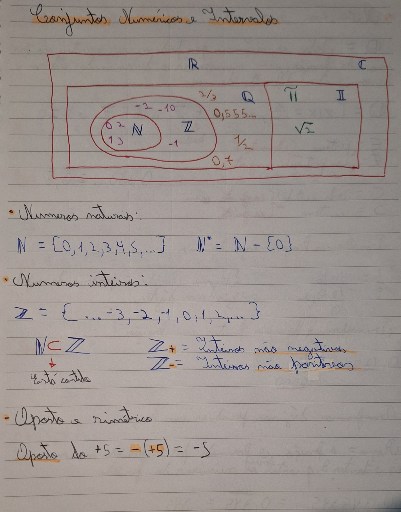

Conjuntos Numéricos
- Introdução ao conteúdo
Esse tema não era novidade para mim, havia estudado no ensino fundamental, mas não de forma aprofundada e com cálculos como agora, para mim não houve dificuldade na compreensão desses conjuntos, mesmo sendo algo um pouco abstrato.Os conjuntos numéricos são uma das formas de organizar os números existentes baseado nas suas características, eles são classificados dentro de grupos, que podem ou não estar dentro um dos outros.
A seguir segue um exemplo de como essa organização dos números funciona:
- Números Naturais
Os números naturais são o grupo mais interno da imagem, dentro desse grupo estão todos os números positivos mais o zero.
É representado pela letra maiuscula N com um risco.
Ex: {0,1,2,3,4,5,…}
- Números Inteiros
Nos números inteiros estão todos os números naturais, ou seja positivos mais o zero, e também os números negativos.
É representado pela letra maiuscula Z com um risco.
Ex:{...-5,-4,-3,-2,-1,0,1,2,3,4,5…}
- Números Racionais
O conjunto dos inteiros está contido dentro desse conjunto, como é possível ver na imagem, os números racionais são todos os números que podem ser escritos em forma de fração com números inteiros e não 0. É representado pela letra Q maiuscula e com um risco.
Pertencem a esse grupo, por exemplo, as dízimas periódicas que são números com vírgula em que uma sequência padronizada de números se repetem infinitamente.
Ex: 10/3 = 3,333… ou 7/3 = 2.333…
- Números Irracionais
Esse é um conjunto que não faz parte de nenhum conjunto anterior, ele é um anexo. Aqui estão os números que não se encaixam nas definições anteriores como ℼ(pi) e raiz quadrada de dois. Esses números são dízimas não periódicas onde não há padrão na sequência de números após a vírgula. É representado pela letra I maiuscula e com um risco. O ℼ(pi) apresenta uma sequência aleatória de números após a vírgula.
Ex: ℼ(pi)= 3,14159265358979323846…
- Números Reais
É a junção dos números racionais e irracionais.
- Números Complexos
Haviam ainda números que não eram contemplados pelos conjuntos anteriores, equações impossíveis de serem resolvidas. Então foi criada a unidade imaginária e o conjunto dos números complexos para solucionar esse problema da matemática.
Resumos do Caderno sobre o Conteúdo

Próximo Tópico